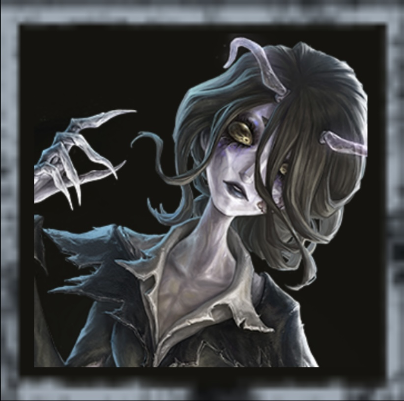
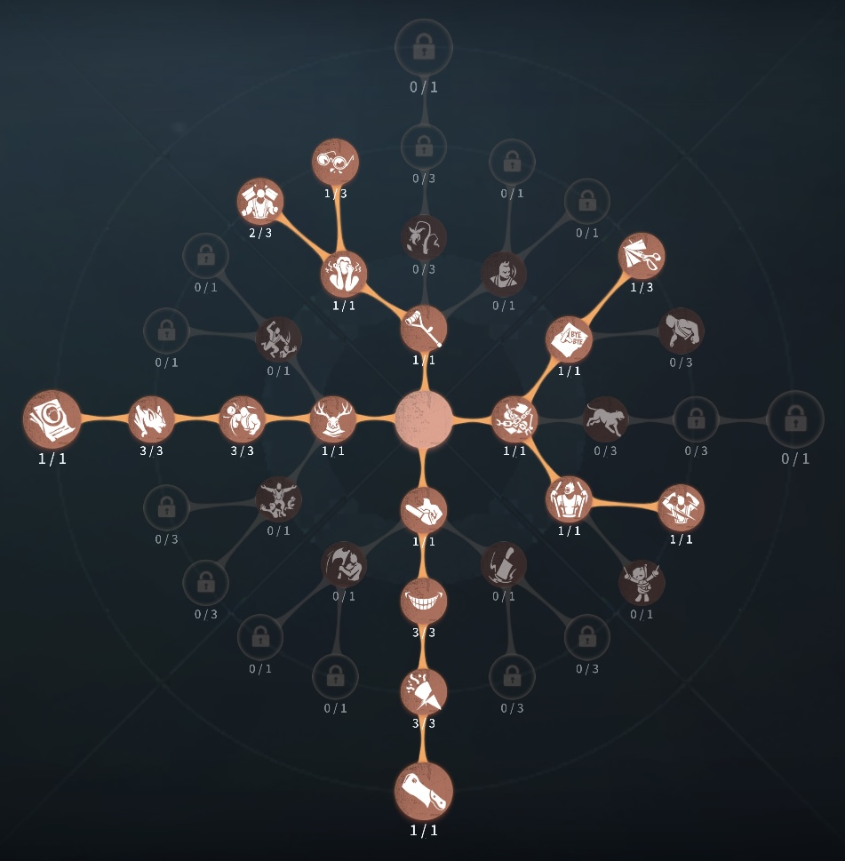
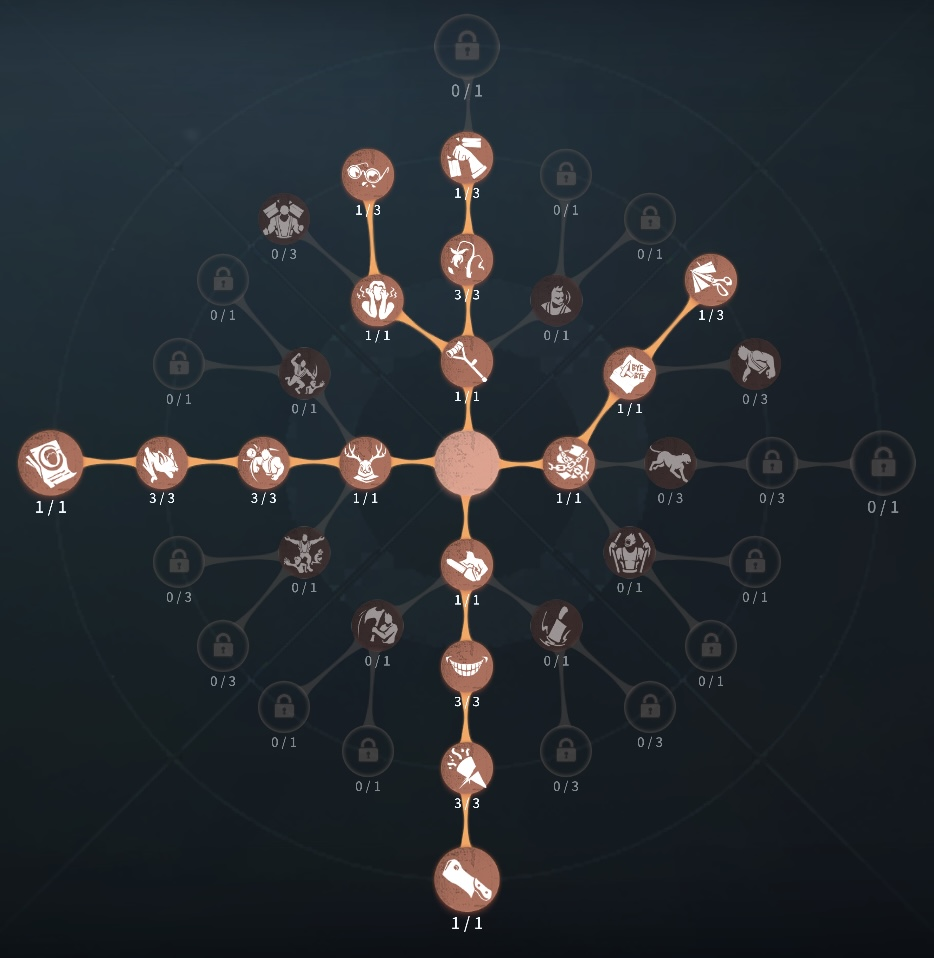

「女王蜂」評価
チェイス、機動力最強！！
外在特質とスキル
特質1:【虫の群れ】
「女王蜂」は虫の群れと共生関係にある。その群れは対戦中も常に存在し、異なる状態に切り替えることができる。・静止状態:
静止状態の虫の群れは、サバイバーに一切影響を及ぼさない。
・捕食状態:
虫の群れは移動し始めると捕食状態に入る。この状態の虫の群れがサバイバーに触れると、エネルギーを12吸い取り、2秒間移動速度が13%アップ。1人のサバイバーに対する吸収クールタイムは1.4秒。
・協同状態:
虫の群れを自分から呼び戻すと、協同状態に入る。板・窓の操作速度が10%上昇する。
存在感0：【感知-移動】、【毒針】
【感知-移動】スキルを長押しすることで、虫の群れの移動経路を指定できる。虫の群れは自身から半径28メートルの範囲内で操ることができ、毎秒15メートルの速度で経路に沿って移動する。「女王蜂」は新たな経路を指定することで一つ前の移動経路を上書きでき、スキルボタンをタップすることで、放った虫の群れを回収することもできる。
【毒針】
エネルギーを35消費することで毒針を1本作り出す。毒針は短時間後に前方へ飛び出し、サバイバーに命中した場合は通常攻撃の0.5倍に値するダメージを与える。
存在感1：【反哺】、【反射的攻撃性】
【反哺】虫の群れが放たれている間、エネルギーを15消費することで虫の群れの方へ飛び、協同状態に入ることができる。クールタイム18秒
【反射的攻撃性】
「女王蜂」は反哺が終了し、本体の状態変換過程に入った時、エネルギーを25消費することで即座に毒針を1本発射できる。
存在感2：【熱殺蜂球】
「女王蜂」は熱殺蜂球を形成し、蜂球を操って毎秒12メートルの速度で移動できる。この状態に入った0.5秒後から、エネルギーが毎秒6の速度で消耗される。エネルギーが0になると、この状態は自動的に終了する。また、自分から本体の状態を切り替え、エネルギーを25消費して即座に毒針を1本放つことで事前にこの状態を終了できる。クールタイム18秒ハンターの立ち回り方
1. 初動の立ち回り
「女王蜂」は 虫の群れを当ててエネルギーを貯めるようにしていきましょう。
✅ 「感知-移動」で虫の群れを触れさせることが最優先:
・接触 → エネルギー＋12
・同時に 移動速度＋15%（2秒） の加速を獲得
・吸収には1秒のクールタイムがあるため、往復させて複数回触れさせるのがコツ
✅虫の群れ → 当てる → 加速 → 追いつく:
という流れで距離を詰める。
2. スキルの使い方
ビリヤードプレイヤーのスキルは 経路移動と捕捉による妨害・攻撃 が中心です。
✅【感知‐移動】:
・半径28m以内にルート指定して高速移動
・サバイバーへの“当て続け”が最重要
・ネルギー稼ぎと加速の源 なので常に動かしたい
✅ 【毒針】:
・エネルギー35消費
・当てれば0.5ダメージ
・連続使用も可能 なので、→ 当てて0.5→ 通常攻撃で即ダウンができる。
★ 遠距離の読み合いや、板窓の〆に非常に強い。
✅ 【反哺】:
・エネルギー15消費
・虫の群れの位置に瞬間移動
・協同状態に入り板窓操作速度＋10%
→ 距離詰め・奇襲・板読みが最強クラス
✅ 【反射的攻撃性】:
・着地後にエネルギー25で即毒針
・“反哺→着地→即毒針” が決まると致命的。
・連続使用も可能 なので、→ 当てて0.5→ 通常攻撃で即ダウンができる。
✅ 【反射的攻撃性】:
・毎秒12mで自由移動
・巡回や奇襲に最適
・終了時に即毒針も撃てる
・エネルギー大量消費のため、
→ 使用後はサバイバーに虫を当てて補充が必須
3. チェイス中の立ち回り
「女王蜂」は 虫の使い方と最適な変形が重要です。
・基本は「虫で当て続けて加速」を維持:
捕食状態で触れるほど加速が入るため、
高速チェイス性能がかなり高い。
・距離が縮んだら反哺（ワープ）で一気に詰める:
虫を進行方向に流し、
→ 追いつきそうなところで 反哺
→ 着地して板読み
→ 即毒針 で0.5ダメ
「反哺 → 即毒針」は確定のタイミングで撃つと非常に強力。
・毒針の当てどころ:
板倒しモーション、窓乗り越え中、曲がれない一本道、怪我中で逃げパターンが固定されている時、ここで確実に刺せる。
・蜂球は終盤の詰め技:
暗号機の高速巡回、チェイス中の距離詰め、救助後の追撃どれでも強力。
4. 救助狩りの立ち回り
「女王蜂」は 救助狩り性能が高いハンターです。
・椅子周りに虫の群れを配置:
救助役が近づいたら、触れてエネルギーを吸収→毒針の準備が可能。
・救助直前に「毒針→殴り」でDDを狙う:
救助モーション中 → 毒針、その直後 → 本体攻撃これで簡単にダブルダウンが取れる。
・反哺で椅子付近にワープし奇襲:
救助者の背後から着地攻撃することも可能。
5. 注意点
「女王蜂」を使う際には、以下の点に注意しましょう。
🔹 女王蜂最大の弱点は “エネルギーが無いと何もできない” こと。
→ 毒針を無駄撃ちしない
→ 反哺の連発はエネルギー枯渇の原因
🔹 蜂球はエネルギーを食うので 使い所を選ぶ
→ 蜂球使用からエネルギー0で追えないという負けパターンが多いので注意。
🔹 粘着サバイバーには弱い（スタンを避ける手段が無い）
→ 粘着の対処法が0.5ダメしかないので、興奮や粘着対策人格で対応必須
おすすめの内在人格
傲慢粘着型人格
この内在人格は、粘着に弱い部分を粘着人格で補い、アナウンスで中間距離で救助狩りを狙う。

傲慢チェイス型人格
この内在人格は、破壊欲に振ることで協同状態のバフも合わせ最速にし、アナウンスと枯死で中間救助狩りを狙う。ファーストチェイス強人格


みんなのコメント